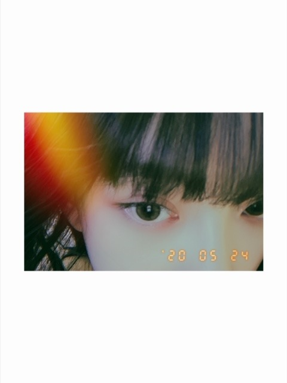
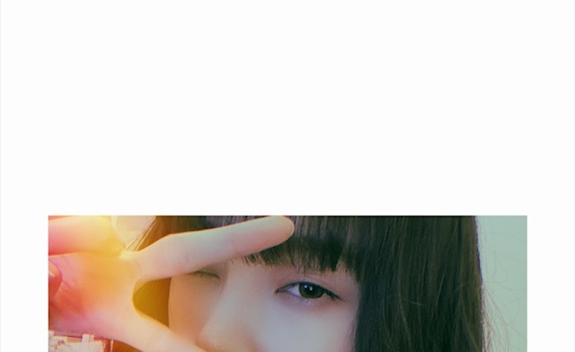
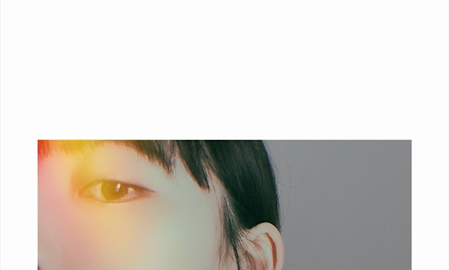

2020/0524Sunめ
今日は目の写真をたくさん載せます
アーモンドアイといいますか、
目が印象的だとよく言われるので
チャームポイントの1つでもあります

写真集発売まであと3日です ひ〜
Instagramの投稿は乃木坂に詳しくない
女性にも楽しんでもらえるように
工夫してきました☺︎
THE写真集アカウントはTwitterにあるので
違いを出したくて...
発売までもうすぐですが
インスタやTwitterはみなさん
楽しんでいただけましたか？
今日も明日もたくさん投稿します！ね！

猫目なのかな
チワワっぽい目ともいわれるし
（´-`）
赤ちゃんライオン飼いたい
（´-`）
質問また募集してるので
お送りください！
では
2020/05/24 14:42
コメント(419)
今日の19時からSHOWROOMなんだね
見ないと！
未央奈ちゃんは目がチャームポイントって言うけど
本当かもしれない～
人一倍、綺麗に見せる為にファッションたくさん
取り入れてるし、そりゃね！
まいやんがイメージモデルを務めるカラコンしても
未央奈ちゃんなら似合うさ
見ないと！
未央奈ちゃんは目がチャームポイントって言うけど
本当かもしれない～
人一倍、綺麗に見せる為にファッションたくさん
取り入れてるし、そりゃね！
まいやんがイメージモデルを務めるカラコンしても
未央奈ちゃんなら似合うさ
乃木坂の好きなところはどこですか？
更新ありがとうございます！嬉しいです。
写真集楽しみで、ドキドキです！あと、のぎたび買いました！！！ボリュームもあって最高です！
それに、堀北コンビのポストカードが当たって、嬉しい限りです、、、！
大好きです。これからも応援してます！
更新ありがとうございます！嬉しいです。
写真集楽しみで、ドキドキです！あと、のぎたび買いました！！！ボリュームもあって最高です！
それに、堀北コンビのポストカードが当たって、嬉しい限りです、、、！
大好きです。これからも応援してます！
質問：いつか、火星に旅行行ってみたいですか？？
未央奈ちゃんこんばんは☺️
綺麗な目♪
好きだよ
投稿もバッチリチェックするねd(⌒ー⌒)!
今日もあと少し
素敵な１日に
綺麗な目♪
好きだよ
投稿もバッチリチェックするねd(⌒ー⌒)!
今日もあと少し
素敵な１日に
赤ちゃんライオンいいですよね！
超カワイイ！
でも、堀ちゃんにはかなわないよ
そんな僕は赤ちゃんライオンより堀ちゃんを飼いたいです。
(ごめんない、ネタです。こんな中だけど笑わせたかった人生です。)
超カワイイ！
でも、堀ちゃんにはかなわないよ
そんな僕は赤ちゃんライオンより堀ちゃんを飼いたいです。
(ごめんない、ネタです。こんな中だけど笑わせたかった人生です。)
次にしたい髪型は何ですか？
ひたすら可愛い！
写真集たのしみ
写真集たのしみ
いつでも美しいや
写真集楽しみすぎます〜
質問かーーー
大好きです！！！
あ、質問になってないわ笑笑
写真集楽しみすぎます〜
質問かーーー
大好きです！！！
あ、質問になってないわ笑笑
未央奈ちゃんブログ更新ありがとう❗️
どの写真も可愛いーー！笑 写真集楽しみに待ってます(*´∇｀*)
どの写真も可愛いーー！笑 写真集楽しみに待ってます(*´∇｀*)
陸上競技の長距離やってる人どう思いますか？
インスタすっごく好きだから、ずっと写真集終わっても続けて欲しい！！！！メイクとか私服とか愛用してるものとか、いろいろ知れて嬉しかったなぁ。女の子のためにメイク動画を何本も撮ってくれたり、その努力がすごいなって思った！！私はメイクに疎かったから、すごく参考にさせてもらってます！！女の子に生まれてよかったと思わせてくれたのはみおちゃんでした。ここ最近もすごく元気を貰ってます！ありがとう。
質問です！自分をジブリのキャラクターの女の子に例えると誰タイプだと思う？？あと、ジブリの男の子達と恋愛するなら、誰が1番良い？？あと、ももんがって好きですか？
ももんが
質問です！自分をジブリのキャラクターの女の子に例えると誰タイプだと思う？？あと、ジブリの男の子達と恋愛するなら、誰が1番良い？？あと、ももんがって好きですか？
ももんが
未央奈ありがとう！
毎日やってくれててこちらも楽しく拝見させていただいてます
もうすぐ写真集発売だね！
ほんと楽しみすぎる〜
大好き！
またね〜
毎日やってくれててこちらも楽しく拝見させていただいてます
もうすぐ写真集発売だね！
ほんと楽しみすぎる〜
大好き！
またね〜
未央奈の目とっても好きなんだけど
アーモンドアイっていうのはじめて知った！勉強になります！
質問はね
休みの日に1日家にいるときってすっぴんなの？
それともお化粧するんですか？
アーモンドアイっていうのはじめて知った！勉強になります！
質問はね
休みの日に1日家にいるときってすっぴんなの？
それともお化粧するんですか？
ブログ更新ありがとー
未央奈ちゃんの目がすごい好きでファンになりました
パッチリしてて本当素敵な目ですよね たしかにアーモンドアイですね 握手会の時とかドキドキしますw
たしかにアーモンドアイですね 握手会の時とかドキドキしますw
質問
☆未央奈さんが1番オススメなゾンビ映画って何ですか？
☆未央奈さんはダンスで技ってやったことありますか？
未央奈ちゃんの目がすごい好きでファンになりました
パッチリしてて本当素敵な目ですよね
質問
☆未央奈さんが1番オススメなゾンビ映画って何ですか？
☆未央奈さんはダンスで技ってやったことありますか？
天璃もみおなちゃんの目がとっても好き♪
一度見たら忘れられない、吸い込まれるみたい
୨୧┈┈┈┈┈┈┈┈┈┈┈┈┈┈┈┈┈┈୨୧ ▷◁.｡
みおなちゃんに少しでも伝えられたら
それだけで天璃はしあわせ
高速の瞬きのコツ教えてーーーー
未央奈ちゃんの目は印象的ですね！
はじめは猫っぽいかなぁ、と思いましたが、狼系の野生っぽさを感じることもあります。
早速ですが、質問をば。
赤ちゃんライオンは難しいと思いますが、次に飼うとしたら、どんな動物が良いですか？
やっぱりワンちゃんかなぁ？☆
はじめは猫っぽいかなぁ、と思いましたが、狼系の野生っぽさを感じることもあります。
早速ですが、質問をば。
赤ちゃんライオンは難しいと思いますが、次に飼うとしたら、どんな動物が良いですか？
やっぱりワンちゃんかなぁ？☆
目は形だけでなく雰囲気も印象に残りますね。
目力って大事なんだなって思います。
目力って大事なんだなって思います。
[め]ありがとー❗️
未央奈の「め」、スゴイ綺麗で好きです。もちろん、
他のパーツもチャームポイントって言っていいほど綺麗です。
「アーモンドアイ」って調べたら馬名出てきました。
InstagramとTwitter楽しんでますよ❗️
Twitterにはオフショット、Instagramにはラフショット、
毎日毎時間更新されるので、嬉しいです❗️ほっこりはん。
次のブログと写真集とshowroom楽しみです❗️
未央奈の「め」、スゴイ綺麗で好きです。もちろん、
他のパーツもチャームポイントって言っていいほど綺麗です。
「アーモンドアイ」って調べたら馬名出てきました。
InstagramとTwitter楽しんでますよ❗️
Twitterにはオフショット、Instagramにはラフショット、
毎日毎時間更新されるので、嬉しいです❗️ほっこりはん。
次のブログと写真集とshowroom楽しみです❗️
しつもんしつもん！！
みてくれるとうれしいな〜
୨୧┈┈┈┈┈┈┈┈┈┈┈┈┈┈┈┈┈┈୨୧ ▷◁.｡
❦ 明日ね、天璃、zoomで友達と顔合わせるんだけど
大事な時にお顔の状況を最大限に可愛くするために
何しますか？ 特別なことしてますか？
୨୧┈┈┈┈┈┈┈┈┈┈┈┈┈┈┈┈┈┈୨୧ ▷◁.｡
大好き
るなぴが未央奈ちゃんと
連絡とりあってるってブログに書いてあったね！
仲良いなぁ(｡･ω･)σﾞ ﾂﾝﾂﾝ
そこで
質問！
❁料理ができないるなぴにすすめる1品は!?
«٩(*´ ꒳ `*)۶»ﾜｸﾜｸ
てことで終わり、反映されてるといいな*°♡
連絡とりあってるってブログに書いてあったね！
仲良いなぁ(｡･ω･)σﾞ ﾂﾝﾂﾝ
そこで
質問！
❁料理ができないるなぴにすすめる1品は!?
«٩(*´ ꒳ `*)۶»ﾜｸﾜｸ
てことで終わり、反映されてるといいな*°♡
モーニングルーティンやナイトルーティンはありますか？
堀ちゃんブログ更新ありがとう！
インスタもTwitterも見てます
1枚目の写真の目がキリッとしていて
カッコイイって思いました
写真集が楽しみです
質問
お気に入りの夏服見せて欲しいです
夏になったら見る映画は何ですか？
次のブログも楽しみにしてます！
インスタもTwitterも見てます
1枚目の写真の目がキリッとしていて
カッコイイって思いました
写真集が楽しみです
質問
お気に入りの夏服見せて欲しいです
夏になったら見る映画は何ですか？
次のブログも楽しみにしてます！
堀ちゃんの目チャームポイントなんだ!
確かに見とれてしまう。
堀ちゃんの顔ドタイプなんだけど、声フェチで堀ちゃんの声が今まで聞いてきた誰よりも好きなんだ!
月に10日バドミントンしてたのにコロナでできなくなった。
早くできるようにならないかな〜。
質問
堀ちゃんのフェチはなんですか?
得意または好きなスポーツありますか?
ではまたコメントおじゃまします。
確かに見とれてしまう。
堀ちゃんの顔ドタイプなんだけど、声フェチで堀ちゃんの声が今まで聞いてきた誰よりも好きなんだ!
月に10日バドミントンしてたのにコロナでできなくなった。
早くできるようにならないかな〜。
質問
堀ちゃんのフェチはなんですか?
得意または好きなスポーツありますか?
ではまたコメントおじゃまします。
好き
未央奈に質問です！
コーディネートしたいメンバーはいますか？
未央奈の目綺麗で好きです◎
またコメント送りますー！！♡
コーディネートしたいメンバーはいますか？
未央奈の目綺麗で好きです◎
またコメント送りますー！！♡
目がほんとキレイですね。
先週のヴィクトリアマイルで圧勝したのはアーモンドアイ
未央奈ちゃん！ブログ更新ありがとう！
いつも写真の可愛さに癒されてます‼︎
楽しみにしてますね‼︎笑笑
いつも写真の可愛さに癒されてます‼︎
楽しみにしてますね‼︎笑笑
未央奈ちゃんブログ更新ありがとう
質問です。
どうやったら未央奈ちゃんみたいに細くなりますか？
いいダイエット方も教えてください！
これからも応援しています
質問です。
どうやったら未央奈ちゃんみたいに細くなりますか？
いいダイエット方も教えてください！
これからも応援しています
未央奈ちゃんブログ更新ありがとう
質問です。
どうやったら未央奈ちゃんみたいに細くなりますか？
いいダイエット方も教えてください！
これからも応援しています
質問です。
どうやったら未央奈ちゃんみたいに細くなりますか？
いいダイエット方も教えてください！
これからも応援しています
質問❗️(1回目のコメントで忘れてました。お手数かけます。)
未央奈がファッションで意識すること、
男性のファッションで気にすることってなんですか？
ファッションを学びたいんじゃ❗️お願いします❗️
未央奈がファッションで意識すること、
男性のファッションで気にすることってなんですか？
ファッションを学びたいんじゃ❗️お願いします❗️
普通の目だよ！大丈夫！！
最近よくブログ更新してくれてありがたい〜暇な時間が潰れてくれるので。ありがと〜
最近よくブログ更新してくれてありがたい〜暇な時間が潰れてくれるので。ありがと〜
コメント遅くなってしまいました
ブログ更新ありがとうございます
未央奈さんの目めっちゃ好きです！
大きくて、すごく綺麗で憧れです
インスタやTwitterもチェックしてます
昨日、アップトゥーボーイ買いました！
写真集とっても楽しみにしています
では
ブログ更新ありがとうございます
未央奈さんの目めっちゃ好きです！
大きくて、すごく綺麗で憧れです
インスタやTwitterもチェックしてます
昨日、アップトゥーボーイ買いました！
写真集とっても楽しみにしています
では
未央奈～
ホンマに空が綺麗やねぇ でもそれ以上に未央奈の目が綺麗………
でもそれ以上に未央奈の目が綺麗……… 大好きです
大好きです
質問します！ブログのコメントに毎日コメントしてもいいですか？？しつこいなぁって思わないでくれますか？
未央奈はそんな事思わないって分かってるけど、やっぱり少し心配になって躊躇してしまってます
未央奈大好きだぁ～
ホンマに空が綺麗やねぇ
質問します！ブログのコメントに毎日コメントしてもいいですか？？しつこいなぁ
未央奈はそんな事思わないって分かってるけど、やっぱり少し心配になって躊躇してしまってます
未央奈大好きだぁ～
赤ちゃんライオンと猿どっちが飼いたい？
こんばんは はじめまして
質問
未央ちゃんは仕事がある日は起床してから
どのタイミングでお仕事スイッチを入れるの？
ではでは(@^^)/~~~
質問
未央ちゃんは仕事がある日は起床してから
どのタイミングでお仕事スイッチを入れるの？
ではでは(@^^)/~~~
こんばんはお疲れさま☺
暑いなあ～
仕事から帰り疲れかぐったり(笑)ハハハ
おうち時間も大変やろうけど
緊急事態宣言期間も普通に働いていたうちらはそろそろ疲れが蓄積中(笑)ハハハ
仕方ないけどね。
おうち時間もやはり大変やろうな。
でもみんな毎日工夫して過ごしてるよね☺
明日全国解除予定ってニュースで言ってるね。
早いような気持ちもあるけど、元の生活に戻りたいよね。
でも今でも俺はどこか気持ち警戒心持っています。
そこで質問。
堀ちゃんは時間出来てホンマに終息したら国内旅行何処に行きたいですか？
写真集予約しているから楽しみにしています☺
わくわくどきどきやね☺
46時間もわくわくどきどきやね☺
全部は仕事あるから見れないけど、出来る限り視聴します☺
アーモンドアイって名馬のアーモンドアイかと思った(笑)ハハハ☺
ではではまたね。
体調気をつけてくださいね。
ほなね、堀ちゃん☺
暑いなあ～
仕事から帰り疲れかぐったり(笑)ハハハ
おうち時間も大変やろうけど
緊急事態宣言期間も普通に働いていたうちらはそろそろ疲れが蓄積中(笑)ハハハ
仕方ないけどね。
おうち時間もやはり大変やろうな。
でもみんな毎日工夫して過ごしてるよね☺
明日全国解除予定ってニュースで言ってるね。
早いような気持ちもあるけど、元の生活に戻りたいよね。
でも今でも俺はどこか気持ち警戒心持っています。
そこで質問。
堀ちゃんは時間出来てホンマに終息したら国内旅行何処に行きたいですか？
写真集予約しているから楽しみにしています☺
わくわくどきどきやね☺
46時間もわくわくどきどきやね☺
全部は仕事あるから見れないけど、出来る限り視聴します☺
アーモンドアイって名馬のアーモンドアイかと思った(笑)ハハハ☺
ではではまたね。
体調気をつけてくださいね。
ほなね、堀ちゃん☺
最近、印象が変わってきてる。未央奈すっごいかわええわ
未央奈ちゃん、こんばんは。僕がまだ乃木坂のファンになる前にたまたま見たバレッタのＭＶで未央奈ちゃんの「目」に惹きつけられて息をのんだことを今でもよく覚えています。
その数年後に初めて握手会で生の未央奈ちゃんに会った時にも、またその目の魅力に吸い込まれちゃいました。
これから先も魅力たっぷりのアーモンドアイを大切にしてください。そして僕らをもっともっと魅了して下さいね。
その数年後に初めて握手会で生の未央奈ちゃんに会った時にも、またその目の魅力に吸い込まれちゃいました。
これから先も魅力たっぷりのアーモンドアイを大切にしてください。そして僕らをもっともっと魅了して下さいね。
ブログ更新ありがとう！！
写真集、もうすぐですね(^^)
楽しみだ！！
～質問～
みおなが最近作るオススメ料理はありますか？？
写真集、もうすぐですね(^^)
楽しみだ！！
～質問～
みおなが最近作るオススメ料理はありますか？？
こんばんは
46時間TV楽しみだなぁ！
今から待ちきれません
言葉は人間が持っている最大の魔力です
言葉の力は強大です
人は言葉でコミュニケーションを取りますが
人を癒すこともできれば傷つけることも出来ます
体を傷つけたとしても治すことは出来ます
しかし、心の傷は中々治すことが出来ません
きっと芸能人の皆さんは
僕ら一般人が思っている以上に
言葉の暴力に晒されているのでしょうね
明日の世界が良い日でありますように
46時間TV楽しみだなぁ！
今から待ちきれません
言葉は人間が持っている最大の魔力です
言葉の力は強大です
人は言葉でコミュニケーションを取りますが
人を癒すこともできれば傷つけることも出来ます
体を傷つけたとしても治すことは出来ます
しかし、心の傷は中々治すことが出来ません
きっと芸能人の皆さんは
僕ら一般人が思っている以上に
言葉の暴力に晒されているのでしょうね
明日の世界が良い日でありますように
みおなちゃんブログありがとう
46時間テレビ楽しみです。
わくわくがとまりません。
ゲームとか、温泉とか何になるかわかりませんが、楽しみにしてます。
質問です。
私はくせ毛が悩みです。
みおなちゃんのサラサラヘアに憧れます。
おすすめヘアケアーは何ですか？
ぜひ教えて下さい。
体調に気をつけて下さい。
46時間テレビ楽しみです。
わくわくがとまりません。
ゲームとか、温泉とか何になるかわかりませんが、楽しみにしてます。
質問です。
私はくせ毛が悩みです。
みおなちゃんのサラサラヘアに憧れます。
おすすめヘアケアーは何ですか？
ぜひ教えて下さい。
体調に気をつけて下さい。
ほぼ毎日更新してくれてありがとう。
目だけでもかわいさが伝わる～
確かにチワワみたいでかわいい～
質問
ワンちゃんと何してますか？
目だけでもかわいさが伝わる～
確かにチワワみたいでかわいい～
質問
ワンちゃんと何してますか？
未央奈お疲れ様です！
ブログ更新ありがとう！
未央奈の目でかくて羨ましい笑
交換してほしいくらい笑
InstagramとTwitter見てます！
毎日更新してくれてありがとう！
未央奈みたいに
顔色白くする方法教えてください！
これからもずっと応援してる！
がんばれー！
ブログ更新ありがとう！
未央奈の目でかくて羨ましい笑
交換してほしいくらい笑
InstagramとTwitter見てます！
毎日更新してくれてありがとう！
未央奈みたいに
顔色白くする方法教えてください！
これからもずっと応援してる！
がんばれー！
ブログ更新ありがと〜！
毎日未央奈ちゃんのブログが読めて幸せだ♡
未央奈ちゃんの目本当に綺麗！羨ましいなぁ、、大きいおめめ。
質問します！
未央奈ちゃんみたいな女の子になりたいです！どうしたらなれますか？？
未央奈ちゃんは可愛くて、綺麗で、ずーっと私の憧れの存在なんです！髪型も未央奈ちゃんの真似したりしてます笑
更新待っとるね〜
毎日未央奈ちゃんのブログが読めて幸せだ♡
未央奈ちゃんの目本当に綺麗！羨ましいなぁ、、大きいおめめ。
質問します！
未央奈ちゃんみたいな女の子になりたいです！どうしたらなれますか？？
未央奈ちゃんは可愛くて、綺麗で、ずーっと私の憧れの存在なんです！髪型も未央奈ちゃんの真似したりしてます笑
更新待っとるね〜
かわいすぎ。
みおな、かわいい。
質問
みおながやっているスキンケア教えて。
みおな、かわいい。
質問
みおながやっているスキンケア教えて。
未央奈ちゃんの目、魅力的で大好き❣️
受験生に向けて応援メッセージお願いします！


ブログ更新ありがとう
インスタは写真集が発売されてもやって欲しい！
目だけの写真も素敵すぎる
次の更新も待ってるね〜！！